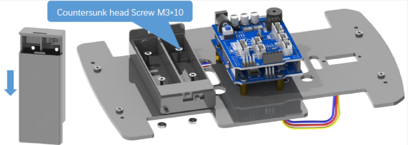

Paso a Paso
Bienvenidos a la sección de Paso a Paso
En esta sección de nuestra página web hemos realizado un manual de montaje de lo que es la parte física del coche arduino.
En cada paso se han adjuntado imágenes para así disfrutar con una parte visual del montaje.
Paso 1: Instalación de motores.
Instalar el soporte del motor en el tablero acrilico inferior.
Paso 2: Instalación de las ruedas.
Colocar la rueda en los motores.
Paso 3: Instalación el módulo de seguimiento de línea.
Instalar el módulo de seguimiento de línea en la parte delantera del chasis.
Paso 4: Instalación de la placa.
Instalar el separador en el tablero acrílico superior.
Paso 5: Instalación de la batería y el servo.
Instalar el soporte de la batería junto a la placa.
Colocar las baterías y conectar el puerto del servo al servo.

Conectar la fuente de alimentación a la placa de extensión (la placa superior, no la placa UNO).

Paso 6: Conectar los componentes.
Conectar los diferentes componentes al puerto correspondiente tal y como se muestra a continuación.
Paso 7: Instalación del sensor ultrasonido.
Instalar el módulo del ultrasónico en el tablero acrílico.
Paso 8: Juntar las dos partes del chasis del coche
Instalar los separadores en el tablero acrilico inferior.
Instalar el tablero acrílico superior en el separador.